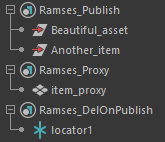
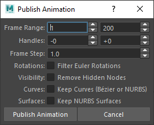
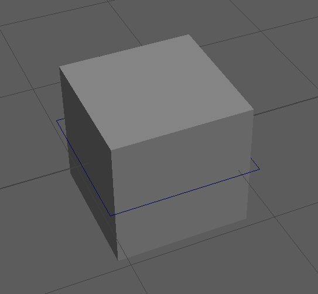
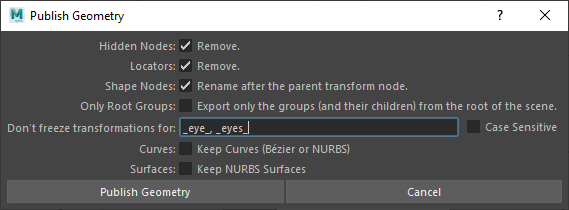
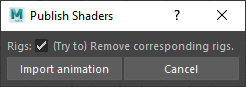
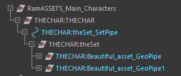
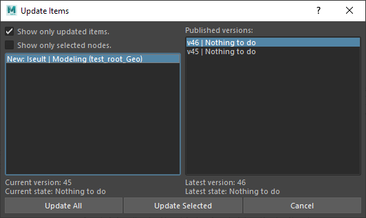

Rubika Flavor of the Ramses Maya Add-on
The Rubika Flavor of the Ramses Maya Add-on is an extension of the add-on developed to be used at the Rubika Supinfocom school, automating the workflow and production pipeline of the graduation movie of the students during the last year of their studies.
It is provided as an example extension of the Ramses Maya Add-on and can be used as-is in other productions too.
It extends the default add-on with some automations when exporting and importing items, and adds an Update command, located in the Ramses shelf too.
The Rubika Flavor of the Maya Add-on automates the publication, import and update of the items according to how the pipeline is set up in the Ramses Client Application. When publishing or importing an item, the Add-on asks the Ramses Daemon which formats needs to be published or imported and then runs the corresponding automation scripts.
This makes the add-on very versatile, as it adapts to the way the pipeline has been designed, using a simple set of predefined formats to be used through the pipes. Read the Configuration and settings section to learn how to configure the pipeline.
As well as the default add-on, the Rubika Flavor can also be used without the Ramses Client Application, in which case it will fall back to predefined default values and formats explained in the Configuration and settings section below.
Publication
Before publishing an item from an asset or a shot scene, you have to tell Ramses exactly what you want to publish. Ramses doesn’t publish all the content of the scene, but only what has been set to be exported.
To set the items to be exported, you just have to include them in one of the following predefined Maya Sets.
| Set name | Desciption |
|---|---|
Ramses_Publish |
The items to be published |
Ramses_Proxies |
The proxies to be published (either geometry, or shaders). For shaders, add the geometry associated to the shaders to be exported. |
Ramses_DelOnPublish |
This special set contains the nodes to be removed from the scene before publishing it. |
The easiest way to always have these sets available in the scenes is to create them in the template files used by each step.
Warning
The names of the sets are case sensitive! Ramses_Publish will be handled, but not ramses_publish.
You just need to add the root node of the items to publish in the corresponding set; Do not add the whole hierearchy! Ramses will automatically publish all its children. This root node can be of any type, and not necessarily a group.

In this example, “Beautiful_asset” and “Another_item” will be published in separate files: Ramses publishes altogether all the child nodes of the nodes found into the Ramses_Publish set.
All exported files contains the name of the pipe and the name of the item if any, as defined in the pipeline editor of the Ramses Client Application.
Ramses will also copy an extra file in the _publish folder: a copy of the Scene as it is at the moment you publish it.
According to the information the add-on gets from the Daemon, when publishing items from specific steps, a few options may be shown.
Configuration and settings
The Add-on automatically publishes and imports items using predefined formats and configurations. These formats can be set to be used between any step in the production pipeline, configured using the Ramses Client Application pipeline editor.
As you can see in this example, each step can be connected using several formats.
The Add-on gets the predefined name of the pipes to export the items in the corresponding formats.
Pipe formats
Here is the list of all the pipes the Add-on can handle.
| Pipe ID | Supported file formats | Description |
|---|---|---|
Anim |
Alembic (.abc) Maya ASCII (.ma) Maya Binary (.mb) |
Character and VFX animation. |
AnimRef |
Alembic (.abc) Maya ASCII (.ma) Maya Binary (.mb) |
Same as Anim but imported as a reference. |
Geo |
Alembic (.abc) Maya ASCII (.ma) Maya Binary (.mb) |
Used to export meshes. |
GeoRef |
Alembic (.abc) Maya ASCII (.ma) Maya Binary (.mb) |
Same as Geo but imported as a reference. |
pGeo |
Alembic (.abc) Maya ASCII (.ma) Maya Binary (.mb) |
The proxy geometry to be replaced on rendering by an Arnold Scene Source or any other higher definition geometry. |
pGeoRef |
Alembic (.abc) Maya ASCII (.ma) Maya Binary (.mb) |
Same as pGeo but imported as a reference. |
pSha |
Arnold Scene Source (.ass) | The Arnold scene to be used when rendering to replace proxy geometries by the high definition version. |
rdrSha |
Maya Binary (.mb) | Render shaders, the final version of the shaders. Always imported as a reference. |
Rig |
Maya ASCII (.ma) Maya Binary (.mb) |
Rigged characters and props. Always imported as a reference. |
Set |
Maya ASCII (.ma) Maya Binary (.mb) |
Sets made of other assets. |
SetRef |
Maya ASCII (.ma) Maya Binary (.mb) |
Same as Set but imported as a reference. |
Std |
Alembic (.abc) Maya ASCII (.ma) Maya Binary (.mb) |
A Standard Maya file with minimal changes before publishing. |
StdRef |
Alembic (.abc) Maya ASCII (.ma) Maya Binary (.mb) |
Same as Std but imported as a reference. |
vpSha |
Maya Binary (.mb) | Viewport shaders, a lightweight version of the shaders used for draft display in the viewport. Always imported as a reference. |
Warning
The pipe IDs are case sensitive! Geo will be handled, but not geo.
These pipes are described in more details in the sections below.

When a pipe is not configured or uses unsupported formats, or if the Ramses Daemon is not available (because the add-on is not used with the Ramses Client Application), Ramses will fall back on the Step names to try to export something anyway, using the following rules.
| Step ID | Default output pipe IDs | Description |
|---|---|---|
MOD (Modeling) |
GeopGeovpSha |
Geometry Proxy Geometry Viewport Shaders |
SHADE (Shading) |
rdrShapShapGeo |
Render Shaders Arnold Scene Proxy Geometry |
RIG (Rigging) |
Rig |
Rigging |
SET (Sets) |
Set |
Sets of assets |
LAY (Layout) |
Std |
A Standard file. |
LIGHT (Lighting) |
Std |
A Standard file. |
ANIM (Animation) |
Anim |
Baked animation. |
VFX (Visual Effects)) |
Anim |
Baked animation. |
These default values are defined in the plug-ins/rubika/utils_constants.py source file of the add-on.
Animation - Anim and AnimRef

This is what Ramses does when publishing animation:
- Copy the current scene in the publish folder, as it is without any change.
- Import all references in the scene.
- Remove all namespaces from node names.
- For each node found in the
Ramses_Publishset:- If the node is an empty group, it is removed, and skip.
- Remove all hidden children if the Remove Hidden Nodes is checked in the publication options.
- Remove all non-mesh nodes, except curves or NURBS if the options to keep them are checked.
- Delete history and rename shapes after the transform nodes if the option to keep deformer animation is not checked.
- Add a root controller as a parent of the published node.
- If the pipes contain Alembic files, publish the node and its children in an alembic file.
- If the pipes contain Maya ASCII or Maya Binary files, publish all the nodes from the
Ramses_Publishset as a single Maya file.

A root controller is added as a parent of the root node of the published animation (a simple curve), which stores needed meta-data and can be used to manipulate the item once imported into another scene.
(Proxy) Geometry - Geo, pGeo, GeoRef and pGeoRef

This is what Ramses does when publishing animation:
- Copy the current scene in the publish folder, as it is without any change.
- Import all references in the scene.
- Remove all namespaces from node names.
- Remove all animation from the scene if the option to keep animation is not checked.
- Lock the visibility of hidden nodes.
- For each node found in the
Ramses_Publish(for the Geo pipes) or theRamses_Proxies(for the pGeo pipes) set:- If the node is an empty group, it is removed, and skip.
- Lock transform of the node.
- Move the node to the origin of the scene (0,0,0)
- Remove all hidden children if the Remove Hidden Nodes is checked in the publication options.
- Remove all non-mesh child nodes, except curves, NURBS and locators if the options to keep them are checked.
- Delete history and rename shapes after the child transform nodes if the option to keep deformer animation is not checked.
- Freeze and lock transform of all children if their name does not contain one of the filters set in the publication options and the animation is not kept.
- Add a root controller as a parent of the published node.
- If the pipes contain Alembic files, publish the node and its children in an alembic file. If the animation is kept, the current timeline frame range is used.
- If there are also shader pipes for the current step, publish the shaders of the node.
- If the pipes contain Maya ASCII or Maya Binary files, publish all the nodes from the
Ramses_Publishset as a single Maya file.
A root controller is added as a parent of the root node of the published geometry (a simple curve), which stores needed meta-data and can be used to manipulate the item once imported into another scene.
Proxy shaders - pSha
This is what Ramses does when publishing proxy shaders (Arnold scene source):
- Copy the current scene in the publish folder, as it is without any change.
- Import all references in the scene.
- Remove all namespaces from node names.
- Remove all animation from the scene.
- Export each node and its children from the
Ramses_Proxiesset as an .ass file.
Render and Viewport shaders - rdrSha and vpSha

Everything except shaders is removed from the scene; the only option is to also remove shaders associated with hidden nodes.
This is what Ramses does when publishing shaders:
- Copy the current scene in the publish folder, as it is without any change.
- Import all references in the scene.
- Remove all namespaces from node names.
- Remove all animation from the scene.
- For the shading engines of each node (and its children) in the
Ramses_Publishset:- Remove hidden nodes if the option is checked in the publication settings.
- Remove all non-mesh nodes.
- Delete history of the nodes.
- Rename the shading engine after the surface shader.
- List all nodes using the shading engine and keeps the information as an extra attribute of the shading engine node.
- Export the shading engines of the node and its children as a Maya Binary file.
Rig - Rig

This is what Ramses does when publishing rigs:
- Copy the current scene in the publish folder, as it is without any change.
- Import all references in the scene.
- Remove all namespaces from node names.
- Remove all animation from the scene if the option to delete keyframes is checked.
- Lock the visibility of hidden nodes if the option is checked.
- For each node in the
Ramses_Publishset:- Move the node to the origin of the scene (0,0,0).
- Export viewport shaders of the child nodes if the pipe contains viewport shaders.
- Add a root controller as a parent of the published node.
- Hide or set draw style to none for all the joints according to the selected option.
- Publish all the nodes as a single Maya Scene.
Set - Set or SetRef
Sets are published as a simple Maya Scene where everything else has been removed; all meta-data and links with external assets are kept, so that individual assets can be updated later, as well as the whole set, but individual root controllers of included assets are hidden.
The options are the same as with Geometry.
This is what Ramses does when publishing sets:
- Copy the current scene in the publish folder, as it is without any change.
- Import all references in the scene.
- Remove all namespaces from node names.
- Remove all animation from the scene if the option to keep animation is not checked.
- For each node found in the
Ramses_Publishset:- If the node is an empty group, it is removed, and skip.
- Lock transform of the node.
- Move the node to the origin of the scene (0,0,0)
- Remove all hidden children if the Remove Hidden Nodes is checked in the publication options.
- Remove all non-mesh child nodes, except curves, NURBS and locators if the options to keep them are checked.
- Delete history and rename shapes after the child transform nodes if the option to keep deformer animation is not checked.
- Freeze and lock transform of all children if their name does not contain one of the filters set in the publication options and the animation is not kept.
- Store the current PRS values of the child transform nodes managed by Ramses (i.e. imported assets) in their extra attributes to be able to keep the offset when updating the set later.
- Freeze and lock transfrom of all other child nodes.
- Remove all empty groups.
- Add a root controller as a parent of the published node.
- Publish the nodes in a single Maya Scene.
Standard - Std or StdRef
Standard publication is the default format, where everything not included with the items to be published is simply removed, and the Scene is then published as is, as a simple Maya Scene.
This is what Ramses does when publishing standard pipes:
- Copy the current scene in the publish folder, as it is without any change.
- Remove all empty groups.
- For each node found in the
Ramses_Publishset:- Add a root controller as a parent of the published node.
- If the pipes contain Alembic files, publish the node and its children in an alembic file. The current timeline frame range is used.
- If there are also shader pipes for the current step, publish the shaders of the node.
- If the pipes contain Maya ASCII or Maya Binary files, publish all the nodes from the
Ramses_Publishset as a single Maya file.
Import

When items are imported in a Scene, Ramses sorts them in groups at the root of the Scene, depending on their type, group, and where they’re from. Root controllers are colored to make them easily recognizable. The name of the pipe where they came from is kept for future information.
It is possible to select several input pipes at once, for example to import both the geometry and the shaders at once; Ramses will automatically handle the import and assign the right shaders to the right geometry in this example.
Animation - Anim or AnimRef

When importing an animation, Ramses can try to remove corresponding existing rigs from the scene before, so that only the baked animation is kept.
If the pipe ID is AnimRef the animation is imported as a reference.
(Proxy) Geometry - Geo, pGeo, GeoRef or pGeoRef
Geometry is simply added to the scene, sorted in its corresponding group.
If the pipe ID is GeoRef or pGeoRef the geometry is imported as a reference.
Proxy shaders - pSha
There is no automatic import of Arnold Scene Sources. You have to manually handle them.
Render and Viewport shaders - rdrSha and vpSha
Shaders are imported to the current Scene, and Ramses will automatically assign them to any corresponding selected geometry before the import.
Shaders are imported as reference.
Rig - Rig
Rigs are imported as reference into the current Scene. You can safely import several times the same Rig, as Ramses will correctly handle namespaces so they’re self-contained.
Set - Set or SetRef
Sets are imported the same way as geometry.

If a set contains other assets, Ramses should keep any modification of their PRS coordinates when updating, but you can also choose to update either specific assets individually or the whole set at once.
 Update
Update

The column on the left lists all nodes managed by Ramses found in the current scene.
When selecting one of the nodes on the left, Ramses displays the version information at the bottom of the list, and the available published version of the correspondint asset (or shot) in the column on the right.
You can then select the version you wish to use to replace the current node; you can either select a more recent version to update the asset or select an older version as well to restore a previous version.
When updating, by default Ramses will list only the items which needs to be updated; if for some reason you need to re-import/update another item, uncheck the box at the top of the window.
Warning
When updating an item, all the children of its root controller will be removed and replaced by the updated item.
If you added an object to the hierarchy you want to keep, make sure to move it out before updating and parent it again after the update.